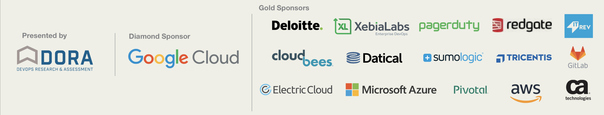

class: dp-leading, center, middle # DevOps Flow 2019: Intro <div id="presenter-creds"> Sergii Sinienok<br /> Cloud Architect @ Dev-Pro.net </div> --- class: dp-leading <br /> <br /> # Few words about myself .left-column[ <div class="center-img"> <img class="about-ss" src="assets/img/Sinienok_Sergii_ava-175x175.jpeg"></img> </div> ] .right-column[ * 12+ years in IT * Passioned about enterprise-grade solutions * Cloud- and service-oriented mindset * <a class="linkedin" href="https://www.linkedin.com/in/sergiisinienok/" title="LinkedIn">LinkedIn</a> ] --- class: dp-regular # Agenda * The origins of DevOps - the story behind. * Traditional vs Digital products * 3-Tier Monolith vs Microservices * Organization structure and DevOps * Core DevOps Practices * DevOps roles - examples * DevOps Flow 2019 - overview --- class: dp-regular # DevOps - Definition __DevOps__ is an organizational and cultural movement that aims to increase software __delivery velocity__, improve service __reliability__, and build __shared ownership__ among software stakeholders. It is __not Who__ (engineer), it __is What__ (Values, Processes, Practices). * Automation * Human to Machine knowledge sharing * Teamwork (Dev, Ops, QA, etc.) --- class: dp-regular # DevOps - The Story Behind .left-column[ * If you need software - guess what? You need to build it somehow! * The need to standardise and optimize the Software Development Lifecycle (SDLC) * Huge demand to formalize SDLC ] .right-column[ <img src="https://www.sessionlab.com/assets/images/categories/idea.png" class="right-column-img img-up"></img> ["Session Lab"](https://www.sessionlab.com) ] --- class: dp-regular # Information Technology Infrastructure Library .left-column[ * First attempts to take the challenge of __predictable__ software delivery. * ITIL - ["Great Britain, State As A Service"](https://www.historylearningsite.co.uk/british-politics/civil-service-reforms/). * ITIL Service Lifecycle stages, processes and functions: Service Strategy => Design => Transition => Operations => Improvements ] .right-column[ <img src="https://tritec-education.ru/wp-content/uploads/2011/09/help-desk-software-itil-logo_thumb.jpg" class="right-column-img img-up"></img> ["Tritec Education"](https://tritec-education.ru) ] --- class: dp-regular # The Origins of DevOps * IT role transformation: Automate Well Known Processes (Secondary role) -> Digital product, IT as a business (Primary role). * 2009 John Allspaw (Ops) & Paul Hammond (Dev) @ Flickr - ["10 Deploys Per Day Dev and Ops Cooperation at Flickr"](https://www.youtube.com/watch?v=c6tWX48tmAo) ["slideshare"](https://www.slideshare.net/jallspaw/10-deploys-per-day-dev-and-ops-cooperation-at-flickr/10-Ops_job_is_NOT_to) * ["DevOps origins: Patrick Debois"](https://devops.com/the-origins-of-devops-whats-in-a-name) --- class: dp-regular # IT Role - Enterprise and Traditionl Products Enterprise processes automation: A => B. __The Idea__ remains the same, __details__ are subject to change. Straightforward long term strategy. <div class="straight"></div> --- class: dp-regular # IT Role - Agile and Digital Products Agile: A => B? => B? => B!!! . __The idea itself is a subject of transformation__. <div class="agile"></div> --- class: dp-regular # Why Not DEV And OPS Separately Moving Forward? * Complexity of software increases in magnitude * IT became a business itself instead of serving business. * Time to Market * ITIL efficiency is concerned assuming all the above. --- class: dp-regular <div class="netflix-complexity"></div> --- class: dp-regular # Oldschool - "Traditional" SDLC * Main value of Computers - Business Processes Automation and efficiency * Monolith, 3-tier software architecture * Waterfall, OOP and Domain Driven Design * Software helps the main product to interact with the market --- class: dp-regular # Agile - "Digital" Products * Software itself interacts with the market * Software IS a product --- class: dp-regular <div class="digital-music"></div> --- class: dp-regular # Traditional/Physical VS Digital Products - Examples * Traditional: Drinks, Cars, Electricity, Food * Digital: Uber, Monobank, Slack, Salesforce, Airbnb --- class: dp-regular # Traditional vs Digital Companies - 3P Communication * Processes * People * Products --- class: dp-regular <div class="adjuvi"></div> [https://pbs.twimg.com](https://pbs.twimg.com) --- class: dp-regular # Conway Law .left-column[ __Any organization that designs a system (defined broadly) will produce a design whose structure is a copy of the organization's communication structure.__ ["Melwin Conway's Official Website"](http://www.melconway.com/Home/Conways_Law.html) ] .right-column[ <img src="https://showme.codes/assets/images/292372-399fdb9f12dcd32b.png" class="right-column-img"></img> ["Showme Codes blog"](https://showme.codes) ] --- class: dp-regular # Conway Law - Consequences For Engineers * Software architecture drift to micro services * Solutions Complexity Increases * Software quality degradation - we’re learning how to build digital products --- class: dp-regular <div class="netflix-complexity"></div> --- class: dp-regular # How The Hell It Is All Related To DevOps?! .left-column[ * Values * Principles * Methods * Practices * Tools ] .right-column[ <img id="lvls-of-devops" src="https://devopsingh.com/wp-content/uploads/2019/03/5-Levels-of-Understanding-DevOps.jpg" class="right-column-img img-slight-up"></img> ["DevOpSingh"](https://devopsingh.com) ] --- class: dp-regular <div class="devops-loop"></div> --- class: dp-regular # DevOps Research And Assessment (DORA) * Launched in 2016 by Gene Kim, Jez Humble and Dr. Nicole Forsgren * The aim is to improve technology and organizational performance * Prioritizing improvement efforts * Attracting and retaining talent * Establishing your brand as a high-performing organization </img> --- class: dp-regular # DevOps And The Industry: DORA Assesment Report, 2018 <div class="dora-2018"></div> --- class: dp-regular # DevOps, Scrum and Cross-Functional/Full-Stack Teams * ["Full-stack Team"](https://agilebusinessmanifesto.com/agilebusiness/full-stack-teams-and-moving-fast/) - group of people with the ability, technical knowledge, and the skills to deliver the solution from its idea to working software. * Scrum Guides: ["Development Team => Team"](https://scrumguide.uservoice.com/forums/241958-general/suggestions/36790429-rename-development-team-to-team-and-remove-sc) <img src="https://miro.medium.com/max/2400/1*W4QtzCtDSxFU2-Murw-X6A.jpeg" class="dora-logo"></img> ["Medium"](https://miro.medium.com) --- class: dp-regular # What Is DevOps - Levels-Based Model * __CAMS Values__ (Culture, Automation, Measurement, Share Knowledge) - “Culture eats strategy for breakfast" * __Principles:__ Full-stack teams (devs, ops, qa, etc.), 2 pizza’s teams, Convey law, Agile Ops * __Practices:__ Infrastructure as Code, Source control, Continuous Integration/Continuous Delivery, Continuous Monitoring, Config Management, etc. --- class: dp-regular # DevOps - Values Level. CAMS Values (WHY?) * __C__ulture - (...) interaction of people and groups, driven by behavior. (...) there is a mutual understanding of others and their goals and responsibilities. * __A__utomation - get rid of boring routine. * __M__easurement - (...) taking a look at the entire operation and assessing it as a whole, not focusing on small parts. * __S__haring the Knowledge (Communication) ["The CAMS Model - Medium"](https://medium.com/@seanguthrie/devops-principles-the-cams-model-9687591ca37a) --- class: dp-regular # DevOps - Principles Level (WHAT?) * Agile processes * Full-Stack Teams * Infrastrucrture Platforms and Cloud Computing * Automation Everywhere * Continuous Improvements --- class: dp-regular # DevOps - Fundamental Practices (HOW?) * Continuous Delivery * Continuous Monitoring * Everything as a Code (Infrastructure, Configs, Docs, etc.) --- class: dp-regular # Continuous Delivery .left-column[ * Predictable delivery on demand * Delivery Pipeline. Has value for every teammate involved into delivery. * Delivery Pipeline - image, roles, examples. ] .right-column[ <img src="https://dzone.com/storage/temp/11399338-cd-big.png" class="right-column-img img-up"></img> ["DZone"](https://dzone.com) ] --- class: dp-regular # Continuous Delivery - Principles * Repeatable and reliable delivery process * Automate everything * Feedback and retrospective actions * Embedded Quality Control * Definition of Done > Done === Released to prod * Continuous Delivery Pipeline is a shared responsibility * Continuous Improvements --- class: dp-regular # Continuous Monitoring - Principles .left-column[ * Monitoring as a service * Centralized and traceable logs * Visual Representation ] .right-column[ <img src="https://www.bdo.com/getattachment/Insights/Assurance/Corporate-Governance/Continuous-Monitoring/BDO-Assurance-Corp-Governance-Practice-Aid-Figure-1.jpg.aspx?width=500&height=370" class="right-column-img"></img> ["BDO"](https://www.bdo.com) ] --- class: dp-regular # Everything as Code - Principles .left-column[ * Code Development and Collaboration practices everywhere * Everything as Code, stored in VCS * Decomposition: Breakdown to Simplify the Complexity ] .right-column[ <img src="https://archsmarter.com/wp-content/uploads/2014/03/Learn-to-code1.jpg" class="right-column-img img-slight-up"></img> ["Archsmaster"](https://archsmarter.com) ] --- class: dp-regular # “Base, Service, App” DevOps Appliance Model * __Base__ - OS, Windows, Linux, Runtime, Infrastructure As A Service (Cloud) * __Service__ - Webserver, Datasbase, Cache, Logging Infrastructure, Queues, Auth * __Application__ - our App’s code --- class: dp-regular # DevOps - Definition __DevOps__ is an organizational and cultural movement that aims to increase software __delivery velocity__, improve service __reliability__, and build __shared ownership__ among software stakeholders. It is __not Who__ (engineer), it __is What__ (Values, Processes, Practices). --- class: dp-regular # World of DevOps - Role Examples * Software Engineer with production infrastructure knowledge * Infrastructure Engineer * Infrastructure Services Engineer * Release/Delivery Manager --- class: dp-regular # Software Engineer With Production Infrastructure Knowledge * Writes app code * Automated Tests * Monitoring * Infrastructure code. * Dev: JS, C#, Java. SRE. Systems Integration Engineer --- class: dp-regular # Infrastructure Engineer * Write code for Infrastructure as a Service. * Provides and maintains infrastructure for Developers. * Kubernetes, Ansible Playbooks, Bash :) --- class: dp-regular # Infrastructure Services Engineer * Writes infrastructure code and maintenance for specific platform services * Storage (MongoDB Replica Set) * Monitoring (Prometheus as a service) * Logging (ELK) * etc. --- class: dp-regular # Release/Delivery Manager * Manages the process of the product’s delivery * Identify and track dependencies * Manages Systems integration process. --- class: dp-regular # DevOps Flow 2019: Practices And Methods * __VCS: Git__ (Everything as a Code). * __Modern Cloud Providers__ (Everything as a Code, Continuous Monitoring, Continuous Delivery). * __CI/CD__ (Continuous Delivery, Continuous Monitoring). * __Configuration Management__ (Everything as a Code). * __Infrastructure Provisioning Tools__ (Everything as a Code, Continuous Monitoring, Continuous Delivery). --- class: dp-regular # DevOps - Definition __DevOps__ is an organizational and cultural movement that aims to increase software __delivery velocity__, improve service __reliability__, and build __shared ownership__ among software stakeholders. It is __not Who__ (engineer), it __is What__ (Values, Processes, Practices). --- class: dp-regular # Summary * DevOps is __What__, not __Who__ * DevOps is here as an answer to __Digital Products challenge__ * This course will be focused on DevOps __Practices__ and __Tools__ * This course is mostly aimed to __Infrastructure Engineers__ * Always ask __what__ does people __mean by DevOps__ :) --- class: dp-leading, center, middle # Q/A --- class: dp-leading, center, middle # Thank you!